|

STAR TREK III:
THE SEARCH FOR SPOCK
1984

|

Sinopse
comentada
Comentários
Citações
Efeitos
Especiais
Trilha Sonora
Trivia
Ficha
Técnica
O
DVD
A Morte Tornada
Chance
de Vida
Como todo filme de ficção científica que se preze,
"À Procura de Spock" exigiu extensas sequências envolvendo efeitos especiais. Por outro lado, diferentemente da maioria dos longa-metragens do gênero, houve muito pouca ousadia aqui envolvendo tomadas criadas "em laboratório".
Aparentemente, o esquema "burocrático" da produção atingiu também a esfera das artes técnicas. O roteiro em si exige muito pouca criatividade por parte dos magos de efeitos especiais da ILM (Industrial Light and Magic), resumindo o serviço em sequências e mais sequências de tomadas com modelos em miniatura.
Aliás, o serviço foi um prato cheio para os artistas de modelos. Várias naves nunca antes vistas foram criadas para a produção, mas sem dúvida a mais ambiciosa delas é a Doca Espacial, localizada em órbita da Terra.
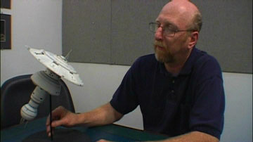
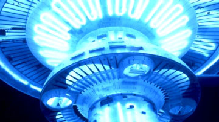
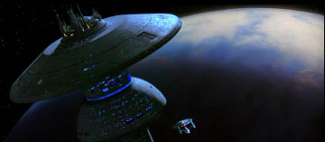
O modelo colossal era um pouco maior que o da Enterprise, mas na tela, graças a truques de superposição, pareceu ainda mais gigantesco. Na verdade, trata-se de mais de uma miniatura. Uma delas recria o exterior majestoso da Doca Espacial. A segunda representa a porção interna do complexo, onde estão guardadas, entre outras naves, a Enterprise e a Excelsior. Um modelo adicional foi necessário para representar uma das portas por onde a Enterprise passa para entrar ou sair da Doca.
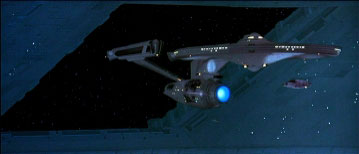
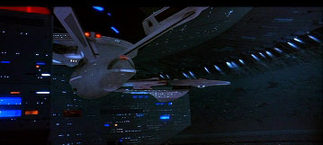
Sem dúvida, a combinação dos modelos se faz de forma efetiva e não temos do que reclamar. Tanto as tomadas são efetivas que serviram não só ao filme, mas foram recicladas ad náusea em episódios posteriores da série.
Outra grande criação para "À Procura de Spock" foi a nave estelar Excelsior. Apresentada como a nova geração de veículos de exploração e combate da Frota Estelar, ela foi concebida por Harve Bennett como a substituta da Enterprise, que seria destruída durante o filme. Embora o sonho do produtor de substituir a nave mais famosa da galáxia não tenha se concretizado, a Excelsior se mostrou um modelo valioso, voltando a figurar em diversos episódios de
A Nova Geração, Deep Space Nine e Voyager, além de ter servido de base para a Enterprise-B, de
"Generations". Em "Jornada nas Estrelas VI: A Terra
Desconhecida", a nave teria um papel proeminente, comandada por Hikaru Sulu.
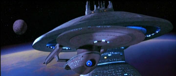
Uma surpreendente contribuição do filme à saga de Jornada foi a criação da primeira ave de rapina Klingon -- que foi de início projetada para ser Romulana! Quando as instruções foram passadas ao pessoal da ILM, o roteiro tinha como principais inimigos os Romulanos, mas, por determinação do estúdio, logo eles seriam trocados por Klingons. Apesar disso, o modelo inicialmente projetado foi mantido, com excelentes resultados. E, ironicamente, a ave de rapina acabaria se tornando um dos modelitos Klingons mais populares na história posterior de Jornada nas Estrelas!
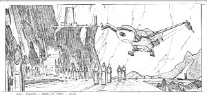
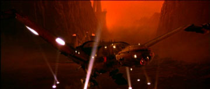
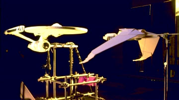
Uma quarta adição proporcionada pelo filme à lista de naves da série é a USS Grissom, uma nave da Frota Estelar pertencente à classe Oberth. Embora tenha pouco aparecido aqui, a nave ainda voltaria a figurar em outros episódios, geralmente representando um veículo de pesquisa científica.
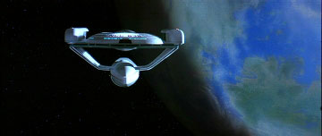
As cenas de batalha concebidas para o filme são em geral bastante contidas. Um tiro aqui, outro ali, mas nenhum conflito das proporções que tivemos em
"A Ira de Khan". O único momento realmente espetacular deveria ser a "morte" da Enterprise.
De novo, o material foi filmado apenas com o uso de modelos. Eles literalmente explodiram a seção disco da Enterprise e filmaram em alta velocidade, para obter o realismo necessário para a cena. Algumas modificações foram feitas na película a posteriori, adicionando drama e ampliando o tamanho da desgraça, mas a essência do efeito foi toda obtida na dura realidade dos modelos.
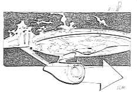
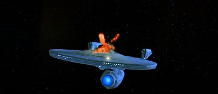
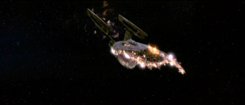
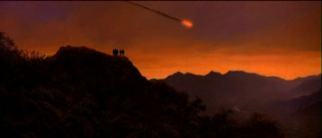
O trabalho de matte-paintings com o planeta Genesis é bastante eficaz -- o que contrasta com o pobre trabalho de cenografia, prejudicado pelo orçamento apertado da película. O fogo produzido em cenário é, na maior parte das vezes, real. Mas há determinados momentos em que até mesmo os efeitos especiais são constrangedores. Repare o deslizamento da encosta que quase derruba Kruge no abismo. A pedra cai numa velocidade constante, claramente movida por um mecanismo!
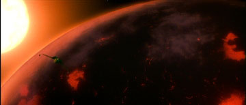
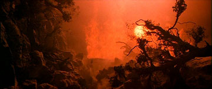
Apesar de problemas bastante notáveis em alguns pontos, os trabalhos de efeitos especiais de
"À Procura de Spock" enfatizam na simplicidade, e com isso atingem resultados mais do que satisfatórios. Não há estratégias e usos revolucionários, como o CGI de
"A Ira de Khan", mas cumprem o propósito de contar a história concebida pelos roteiristas.